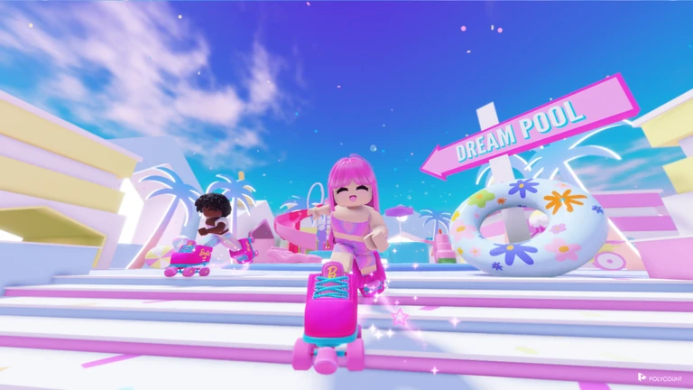
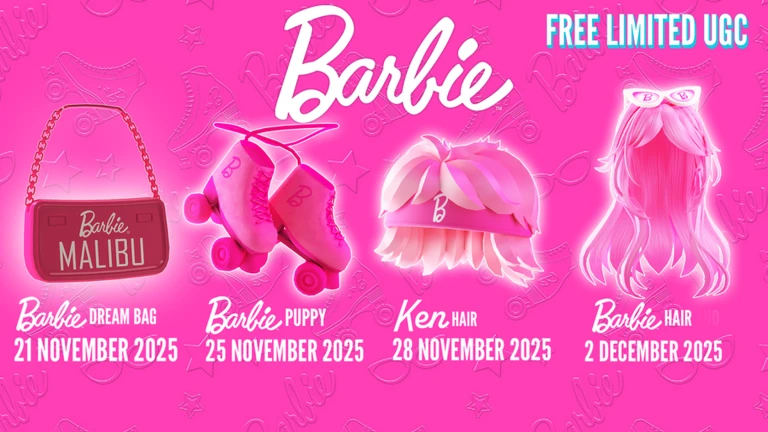

Overview
Project summary
I led programming and studio development for this Roblox Rewarded Playables project, reusing the existing playable framework while building new experience-specific features.
Lead Programmer
Rewarded Playables release where players search the map for toy pieces and work together to rebuild toys like the Barbie Dreamhouse.
Overview
I led programming and studio development for this Roblox Rewarded Playables project, reusing the existing playable framework while building new experience-specific features.
Systems
Built the system where toy pieces spawn around the map and contribute toward rebuilding larger toy objects.
Supported shared player progress toward rebuilding toys through cooperative collection and contribution loops.
Reused the Rewarded Playables framework from previous playable projects while adding new feature work for this release.
Led programming and Roblox Studio implementation for the playable experience.
Media

Media example from Barbie Dream Search.

Media example from Barbie Dream Search.

Media example from Barbie Dream Search.